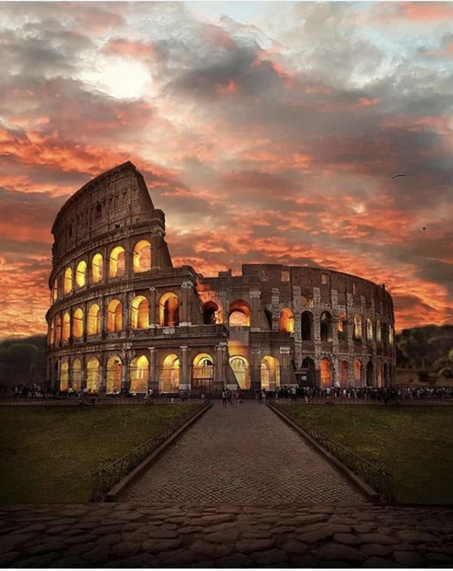
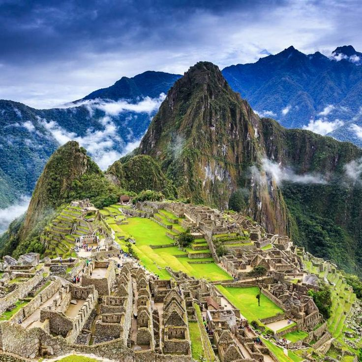
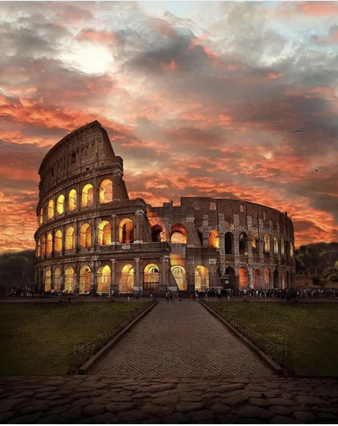
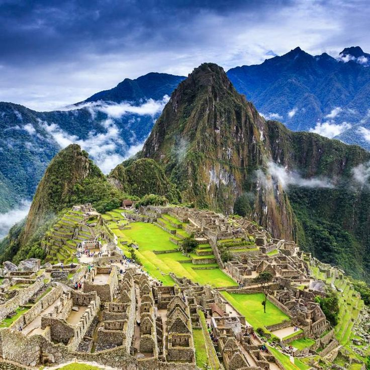

- La gran muralla.
- Petra.
- El coliseo.
- Chichenitza.
- Machu Picchu.
- El cristo redentor.
- Tajmahal
Conoce más de ellas:
Muralla China
Petra

Coliseo

Chichen Itza

Machu Picchu
Cristo Redentor

Taj Mahal
"La clave de tu futuro esta escondida en tu vida diaria"
Alumna:Cuevas Murillo Rosalba Isabel
Grupo:4BPM
Materia:Desarrollo de Aplicaciones Web
Maestra:Bertha Eugenia Perez
Muralla China
Petra
Coliseo
Chichen Itza
Machu Picchu
Cristo Redentor
Taj Mahal
Grupo:4BPM
Materia:Desarrollo de Aplicaciones Web
Maestra:Bertha Eugenia Perez